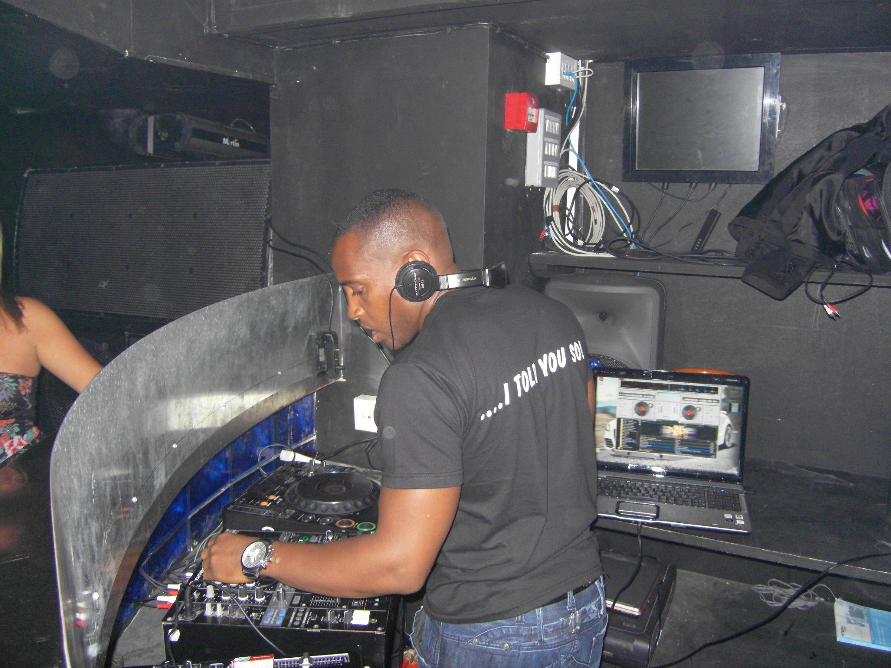

DJ Kaie
I don’t claim to be the best DJ ever or the King of any Genre. What I do claim is to be a true lover of music & its power, especially through good selection & that’s where I try to pride myself.
So whether it’s an Ol’ Skool RnB trip down memory lane or a Honey filled 9mth Duvet Disco compilation, it will have you feeling exactly how you’re meant to.
Bristol born and bred, Unapologetically Black, I evolved from the days of real house parties, pirate radio stations, blues & late night carnivals & the introduction of the BOX ‘Music You Control’ & MTV.
The feeling that comes with good music is all the drug I need. That extra buzz of seeing the reaction from other people listening to your music selections deep bass and harmonized vocals. Jeeez!!!
Hope I can provide you with a good vibe each time you listen to my selection. Thank you in advance. Enjoy.